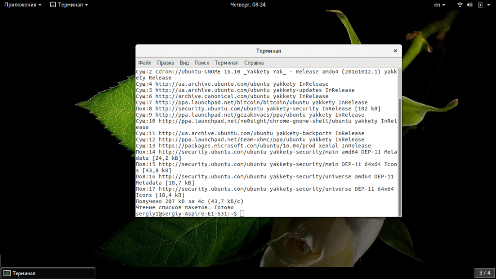
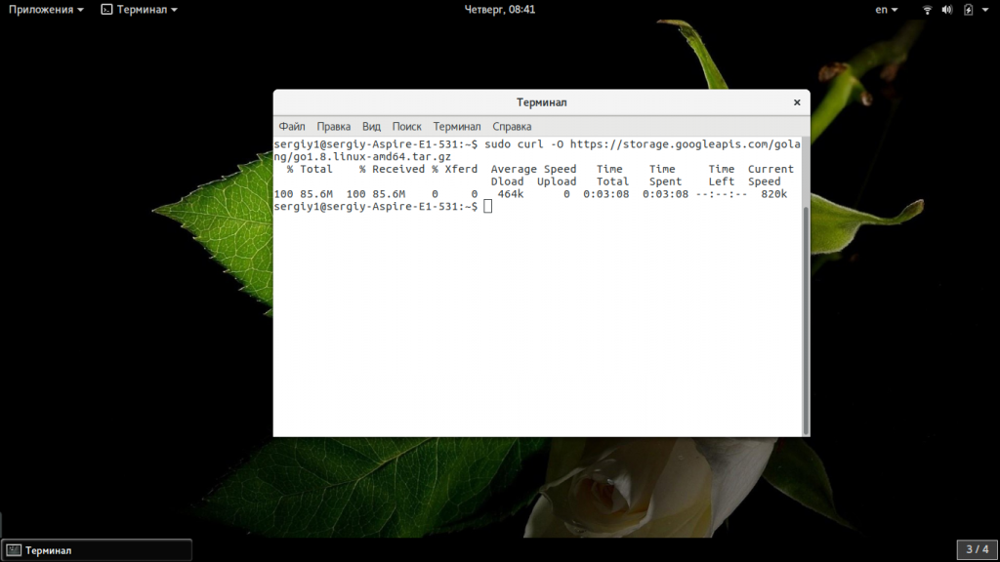
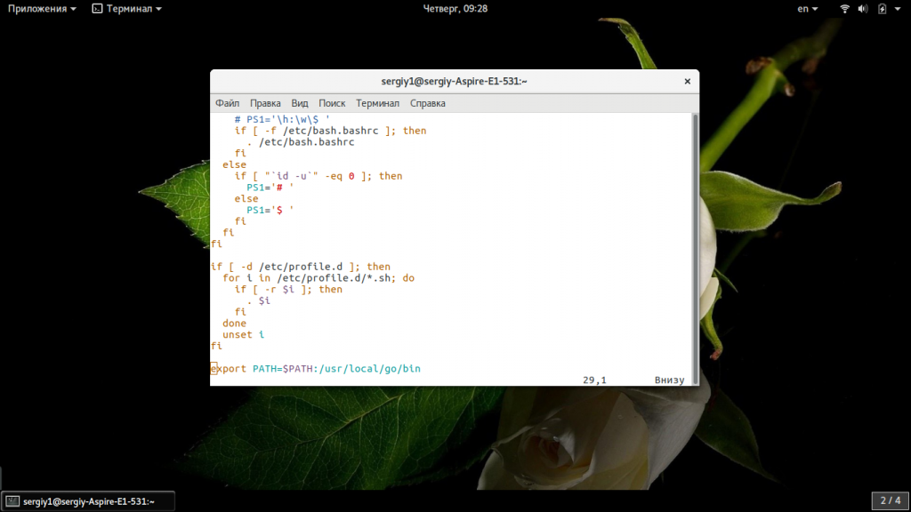
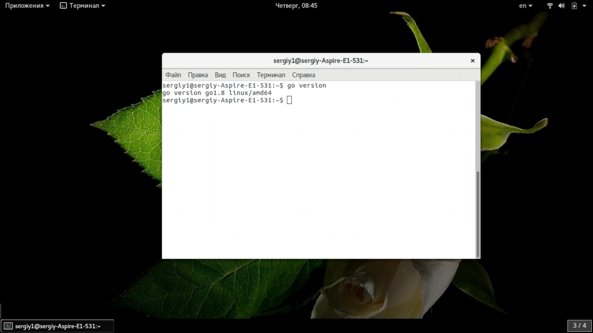
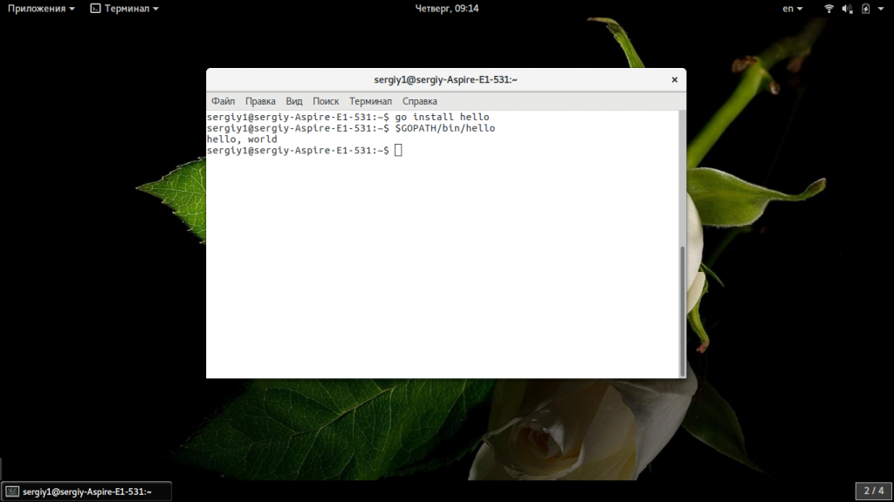

В этой статье мы рассмотрим как выполняется установка Go Ubuntu 16.04 и более поздних версиях. Рассмотрим установку компилятора с официального сайта или PPA, а также запустим небольшую программу чтобы проверить как все работает.
Сначала важно понять что же все-таки такое Go. Этот язык был создан сотрудниками корпорации Google в 2009 году. В этом процессе принимал участие Кен Томпсон, один из разработчиков Си. В первую очередь это компилируемый язык системного программирования, который подходит для создания высокоэффективных программ. Хотя в Go возможен запуск программ в интерпретаторе, они компилируются в объектный код и не требуют виртуальной машины.
Основные возможности языка — это строгая типизация, поддержка указателей, поддержка юникода, динамические массивы, хэш таблицы, автоматическое управление памятью, потоки для параллельного программирования, а также каналы для связи между потоками. Синтаксис Go очень похож на Си, с тем лишь отличием, что некоторые компоненты позаимствованы из других скриптовых языков. Язык постоянно развивается и получает новые возможности. А теперь рассмотрим как выполняется установка Go Ubuntu.
Есть несколько способов установки этого языка. Вы можете загрузить файл с бинарными файлами компилятора с официального сайта и распаковать его в какой-либо директории. Затем останется только установить несколько переменных окружения. Так вы можете получить самую последнюю версию. Сначала обновите систему до самой новой версии:
sudo apt update
$ sudo apt upgrade

Затем скачайте файл с компиляторами, для этого используйте команду:
sudo curl -O https://storage.googleapis.com/golang/go1.8.linux-amd64.tar.gz

Следующий этап — распаковать архив, я хочу чтобы программа находилась в папке /usr/local, как ей и положено, поэтому:
sudo tar -xvf go1.8.linux-amd64.tar.gz
$ sudo mv go /usr/local
На последнем шаге нам нужно установить переменные среды, которые понадобятся для работы программы. Откройте файл /etc/profile и добавьте такую строчку:
sudo vi /etc/profile
export PATH=$PATH:/usr/local/go/bin

Затем то же самое нужно сделать в файле /etc/bashrc, чтобы переменная среды применялась и на локальной машине. После этого можно считать, что установка Golang ubuntu завершена. Обновляем переменные окружения:
source /etc/profile
Затем проверяем версию:
go version

Мы готовы к тестированию. Но есть еще один способ установить Go Ubuntu 16.04, это репозитории PPA. Тут вы не получите самой новой версии, но зато все намного проще. Просто добавьте такие PPA в систему:
sudo add-apt-repository ppa:longsleep/golang-backports
$ sudo apt-get update
$ sudo apt-get install golang-go
На данный момент там уже доступна версия 1.8, так что вам совсем необязательно загружать файл с официального сайта.
Сначала создадим рабочую папку для исходников в домашней папке:
mkdir ~/work/src/hello/
$ cd~/work/src/hello/
Дальше нужно сообщить Go, где находится наша папка для проектов, для этого используется переменная GOPATH:
export GOPATH=$HOME/work/
Эту же строку можно добавить в /etc/profile, чтобы не вводить ее каждый раз. Обратите внимание, что в рабочей папке есть папка src, а уже в ней нужно создавать папки проектов, для каждого проекта отдельная папка. Дальше создадим небольшую программу, которая будет выводить только одну строчку на экран:
vi hello.go
package main
import "fmt"
func main() {
fmt.Printf("hello, world\n")
}
Теперь соберем программу:
go install hello
Мы указываем только название пакета, программа сама ищет нужную директорию в GOROOT и GOPATH. Когда компиляция будет завершена достаточно набрать для выполнения:
$GOPATH/bin/hello

Программа работает, а значит установка прошла успешно и вы можете приступить к созданию своего проекта или изучению языка.
В этой статье мы рассмотрели как выполняется установка go на ubuntu, здесь есть целых два метода и вы обязательно подберете тот, который подходит для вас больше всего. Если у вас остались вопросы, спрашивайте в комментариях!